Week 10
Medical Visualization &
Scientific Visualization
How X-Ray, CT, MRI, fMRI work
X-Rays
- http://en.wikipedia.org/wiki/X-ray
At a very high level of
description, you have an x-ray source, an image receptor (in the
old days a photographic plate), and something in between that
you want to look at. X-rays are partially blocked by dense
tissue like bones, and less blocked by soft tissue resulting in
an image on the image recepter where bones show up white and
softer tissue is darker. These are very portable (dentist
offices, emergency rooms) and very fast. The big disadvantage is
that a 3D volume like our chest or your tooth are compressed
into a 2D image which can make working out the 3D location
difficult.
More modern techniques create a sequence of slices that can be
combined to form a volume of data
CT Scan -
http://en.wikipedia.org/wiki/Ct_scan
At a very high level of
description, a computed tomography scanner uses X-rays to take a
series of 2D images to combine into a 3D volume after a bunch of
math is applied. CT scans are good for looking at bones. They
can also make use of contrast agents, typically iodine.
MRI -
http://en.wikipedia.org/wiki/Magnetic_resonance_imaging
At a very high level of
description, Magnetic Resonance Imaging uses a powerful magnetic
field to align the hydrogen atoms in the water of the body with
the direction of the field. A radio frequency electromagnetic
field is introduced which causes the atoms to alter their
alignment. When the field is turned off they return to their
original alignment producing a detectable signal. Atoms in
different types of issue return to the original alignment at
different rates, based on the density of water in the tissue, so
a 3D picture of the different tissues can be built up through a
lot of math. If there isn't enough natural contrast between the
densities then a contrast agent can be introduced to
artificially boost the contrast. Good for looking at
soft tissue and finding tumors.
CT typically has better
spatial resolution, but MRI has better contrast. MRI takes
longer (30 minutes for MRI vs 10 minutes for CT.) Note that
aside from a person needing to remain still during the scan,
organs like the heart and the lungs are not remaining still that
long. CT uses radiation which is bad. MRI uses strong magnetic
fields which may be bad. Both are constantly improving.
fMRI -
http://en.wikipedia.org/wiki/Functional_magnetic_resonance_imaging
fMRI works like MRI but the idea is to collect data
in real-time (once every few seconds), though at lower
resolution, commonly from the brain.
here are some sample datasets:
http://graphics.stanford.edu/data/voldata/ and
http://digimorph.org/
From the virtual human web
page (http://www.nlm.nih.gov/research/visible/) "The Visible
Human Male data set consists of MRI, CT and anatomical images.
Axial MRI images of the head and neck and longitudinal sections
of the rest of the body were obtained at 4 mm intervals. The MRI
images are 256 pixel by 256 pixel resolution. Each pixel having
12 bits of grey tone resolution. The CT data consists of axial
CT scans of the entire body taken at 1 mm intervals at a
resolution of 512 pixels by 512 pixels with each pixel made up
of 12 bits of grey tone. The approximately 7.5 megabyte axial
anatomical images are 2048 pixels by 1216 pixels, with each
pixel defined by 24 bits of color. The anatomical cross-sections
are at 1 mm intervals to coincide with the CT axial images.
There are 1871 cross-sections for both CT and anatomy. The
complete male data set, 15 gigabytes in size, was made publicly
available in November, 1994.
The Visible Human Female
data set, released in November, 1995, has the same
characteristics as the The Visible Human Male with one
exception, the axial anatomical images were obtained at 0.33 mm
intervals. This resulted in 5,189 anatomical images, and a data
set of about 40 gigabytes. Spacing in the "Z" direction was
reduced to 0.33mm in order to match the 0.33mm pixel sizing in
the "X-Y" plane, thus enabling developers interested in
three-dimensional reconstructions to work with cubic voxels."
(and let us remember that in
1995 personal computers were running at 200Mhz, with 16MB of RAM
and 1 GB hard drives. Now the visible woman dataset easily fits
on an iPod)
Here are some small jpeg
images of a very few of the slices of the visible woman. We will
show a movie in class of the full-size images. Once these images
were collected and aligned then images slicing through the body
on other planes are easy to generate as well as the ability to
generate arbitrary planes.
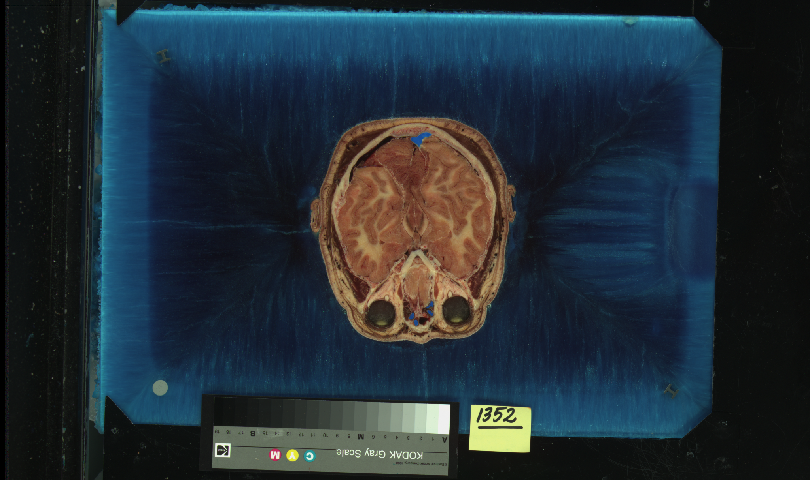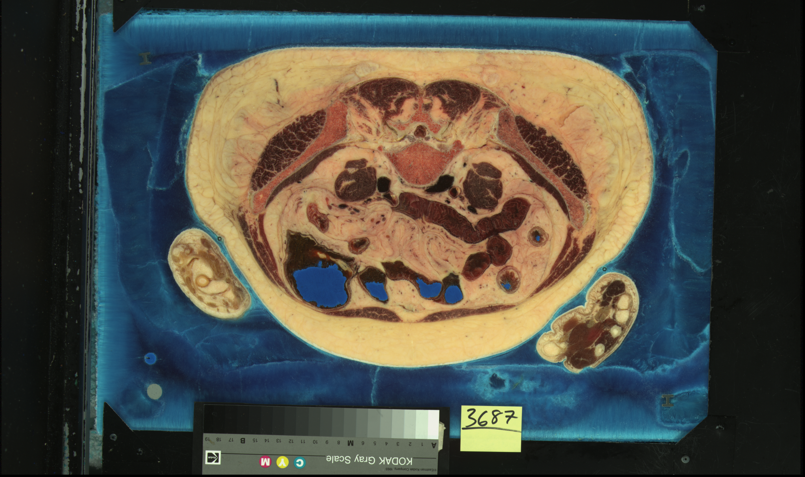
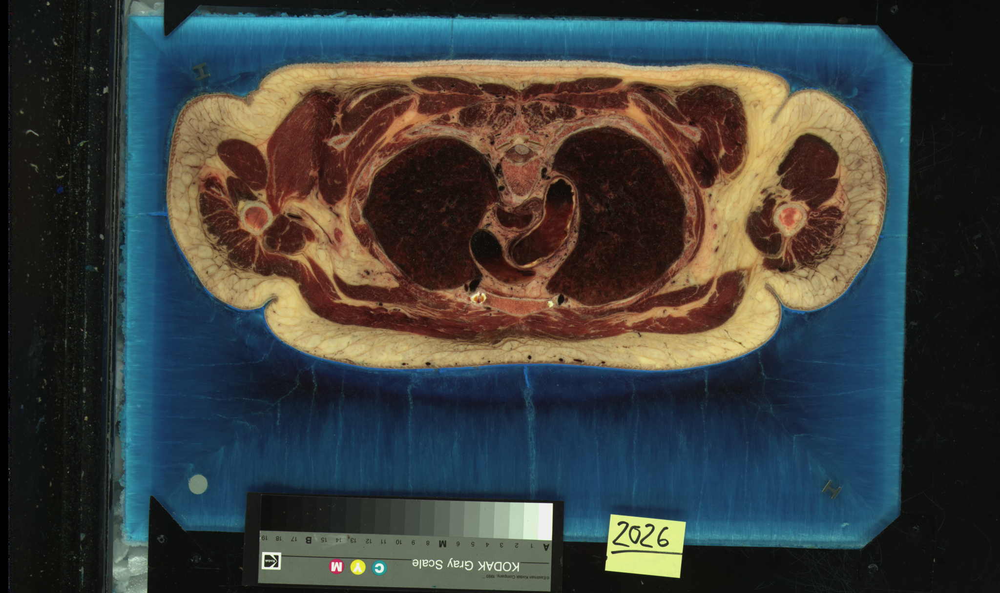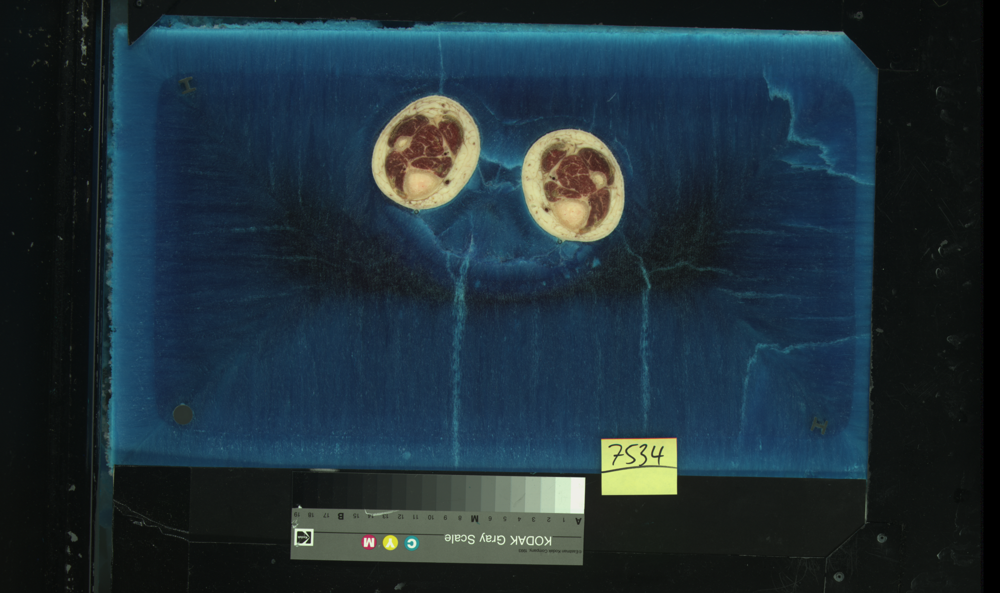
There is a nice applet here to look at the data: visiblehuman.epfl.ch/
We are going to use paraview
to look at the data
paraview is available from www.paraview.org and there
is a nice intro at:
visualization.hpc.mil/wiki/ParaView_Basics
Here is ParaView viewing the
75MB version of the Visible Woman dataset. ParaView is a tool we
use in the graduate level scientific visualization course that
deals much more with 3D datasets. It is build on top of a
library called VTK (the visualization toolkit.) This allows us
to take the volumetric data and convert it into polygonal
surfaces.
This version of the dataset
is made up of 577 slices, 1 slice every 3mm, where each slice is
256 x 256 16-bit values. Note that this is not terribly high
resolution. Once the data is loaded in we can set up two
contours - one for the skin and one for the bones.
Since this is a 3d block of
data values we need to tell paraview how to read in this data:
- Data Scalar Type: unsigned short
- Data Byte Order: BigEndian
- File Dimensionality: 3
- Data
Origin:
0 0 0
- Data
Spacing: 1
1 1
- Data
Extent:
0 255, 0 255, 0 576
- Num Scalar Components: 1
Once its read in I can then create 2 contours - one
transparent at 800 for skin, and one opaque at 1200 for bone.
This results in something similar to this.
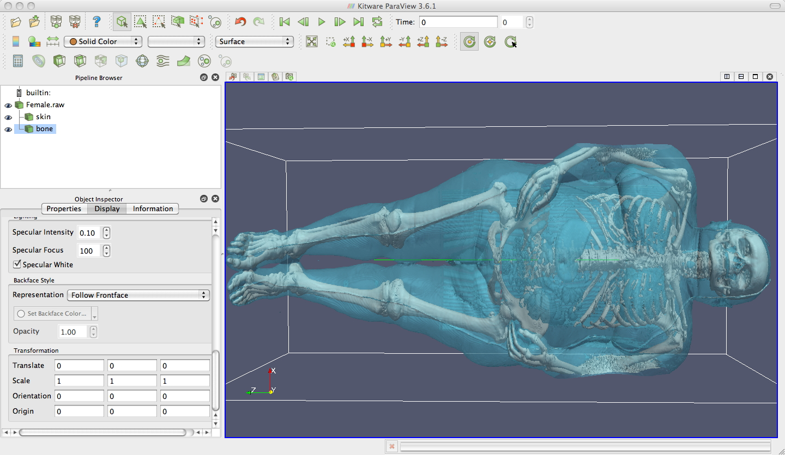
and another way is through volume rendering with the transfer
function shown on the left
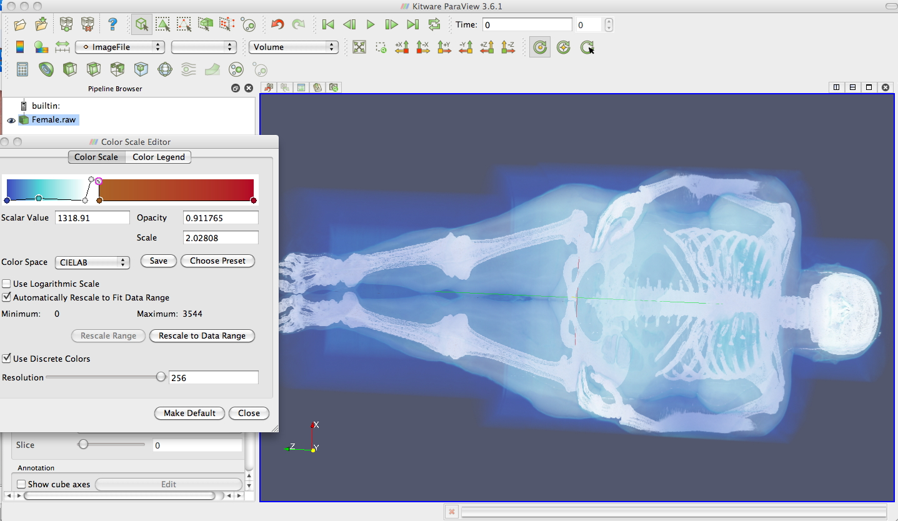
more recently newer scans have been made including the Visible
Korean Human http://vkh3.kisti.re.kr/new/ and a paper
http://www.uchsc.edu/sm/chs/events/vh_conf/pdfs/001.pdf that shows
some of the process and the Chinese Visible Human
http://www.chinesevisiblehuman.com/index_e.aspx
Paraview was designed to be
a general purpose tool so it is not particularly focused on
medical data - which makes it harder to use than the specialized
tools we will talk about later, but has the basic functionality
that students can recreate in the Computer Graphics II course.
- Contouring - constructing
boundaries between regions
another way to look at this kind of data is
through Volume Rendering where we avoid generating polygons
a common way
is to use ray-casting
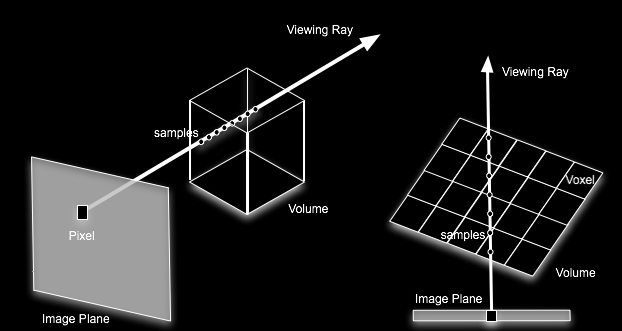
- greyscale data values
- minimum value = transparent
black
- maximum value = white
- determine values encountered
along ray
- processing those values according
to ray function - many possibilities
- volume is 3D image dataset w/
scalar values at points of a regular grid
- need an interpolation function to
sample locations between the grid points
- zero-order / constant /
nearest neighbor returns closest grid point - simple
- trilinear - linear
interpolation between closest points along 3 axis
- can sample volume at uniform
intervals while traversing the ray
- need to take care in choosing
step size - speed vs accuracy tradeoff
- or examine each voxel encountered
while traversing the ray (fig 7-8)
- convert the ray into a
discrete form to obtain an ordered sequence of voxels
- each voxel has 6 sides, 8
vertices, 12 edges
- 6-connected if each share
a face (best at finding small details)
- 18-connected if share a
face or an edge
- 26-connected if share a
face or an edge or a vertex (faster) (fig 7-10)
- ray: (x, y, z) = (xo, yo, zo) +
(a, b, c) t where (a, b, c) is normalized direction vector
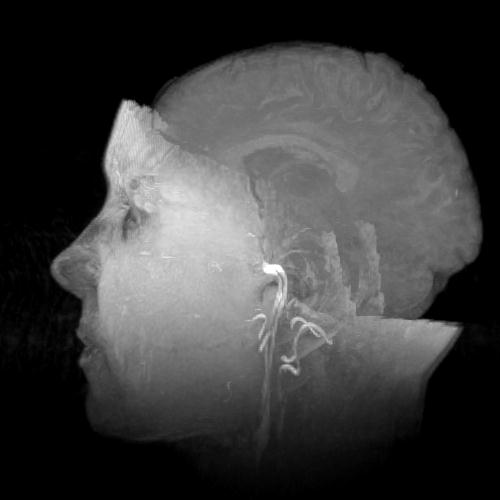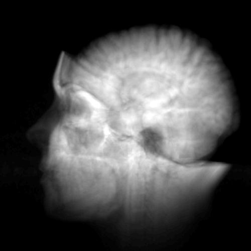
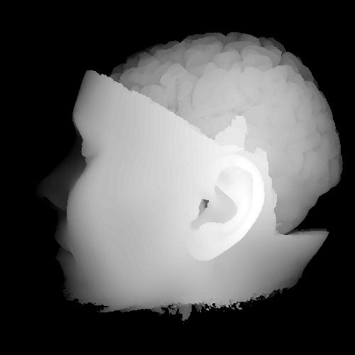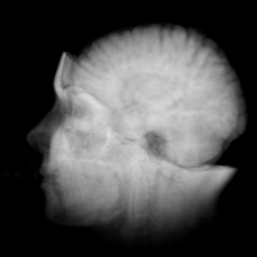
4 different ray functions - UL:maximum, UR:average,
BL:distance=30, BR:composite
a nice program to explore this kind of data on the
mac is OsiriX - http://www.osirix-viewer.com/
and a newer company involved in this work that makes a plugin
for OsiriX is fovia - http://www.fovia.com/
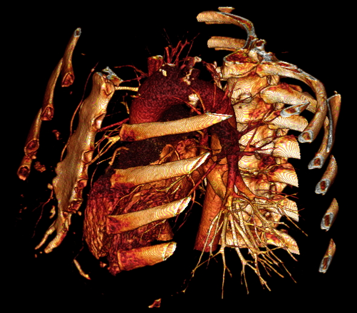
Volume Classification
- transfer function maps
information at voxel location into material / colour / opacity
- e.g. differentiating air,
muscle, bone in a CT scan
- can have separate functions for
red, green, blue, opacity
Regions of Interest
- often need to look through parts
of the volume to see other parts of the volume
- can specify a partial region of
the volume to render that contains interesting things
- use clipping planes or other
geometric forms to specify the region
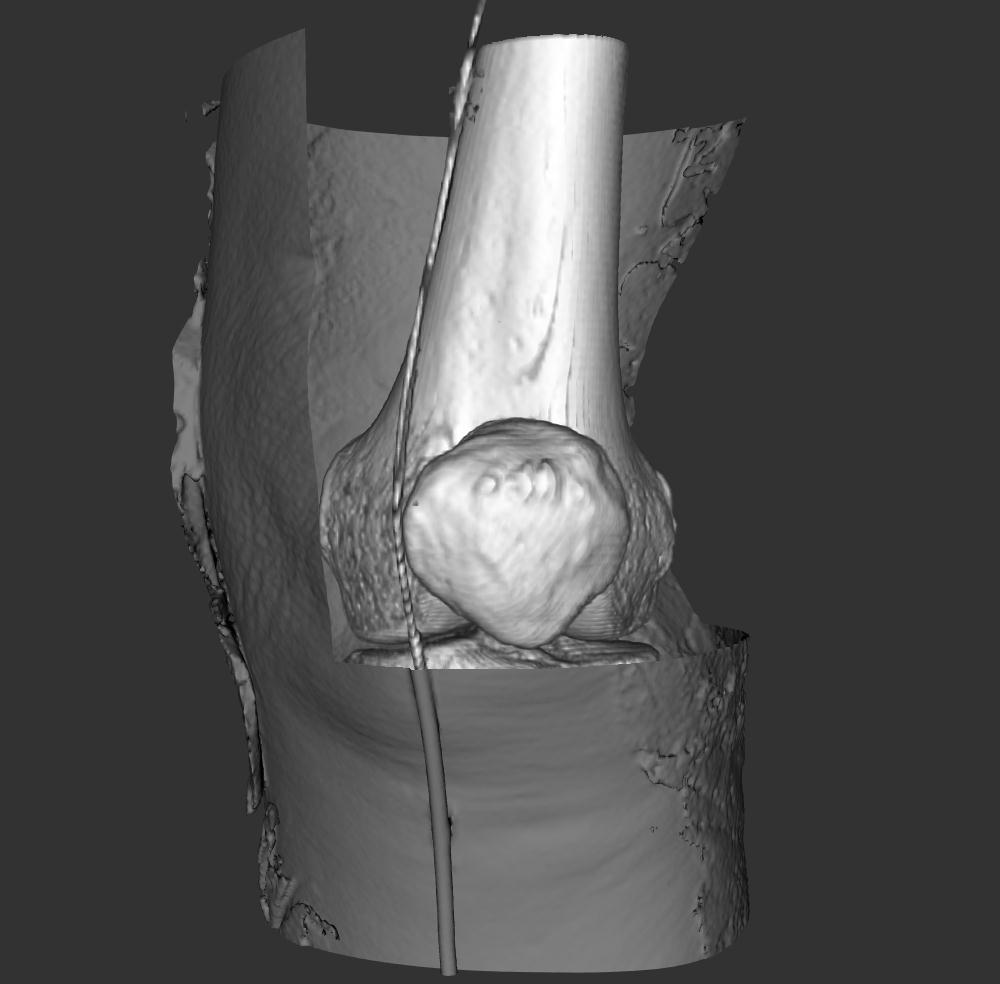
Viewing is helpful. Being
able to view images taken over a period of weeks, months, years,
or before and after surgery are helpful, but for real analysis
you also need tools that allow you to take measurements from
these images (length, volume, density, etc.)
We deal with this kind of 3D
data more in CS 526 where students typically deal with
generating polygonal contours and raytracing.
Similar tools can also be
used to look at other volumetric datasets (where all 3
dimensions may not be lengths) as in astronomy. This web page
describes some work that uses slicer (which sits on top of
the vtk library like paraview does)
http://astromed.iic.harvard.edu/index.cgi/UsingSlicer/Perseus_scenes
Here is that data in paraview
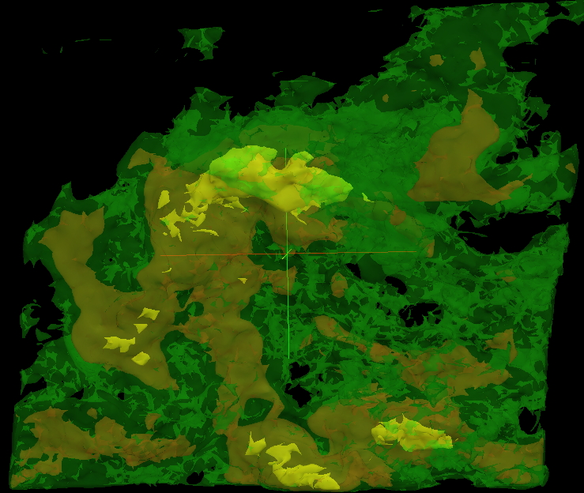
NCMIR microscope image montages
e.g. a
montage of 43,200 images where each is 4000 x 4000 pixels of a rat
brain that are then stitched together.
Like Google maps, this lets you easily zoom from an overall image
of the brain down to individual neurons.
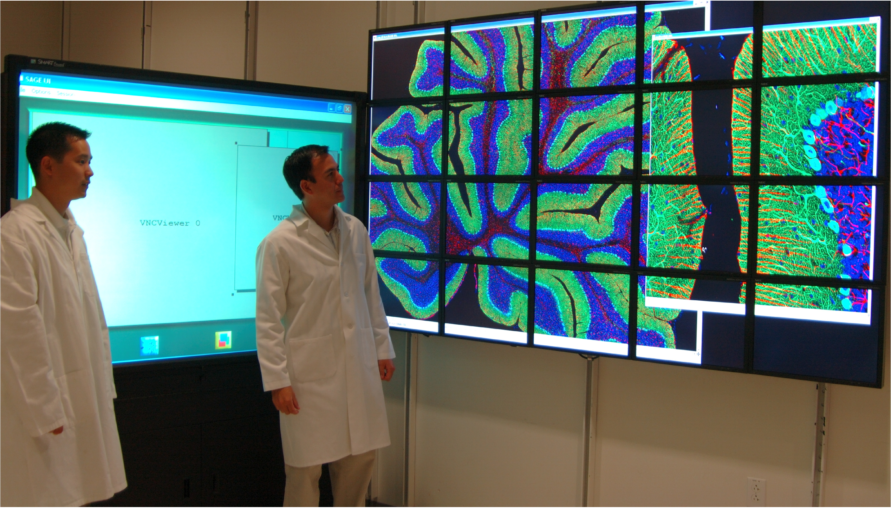
Scientific
Visualization
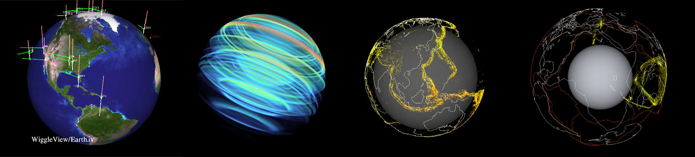
In past terms we have had
talks by three people in this area.
Paul Morin
Director of the Antarctic Geospatial Information Center
http://www.pgc.umn.edu/about/people/morin
Dr Mark SubbaRao
Astronomer
Adler Planetarium
http://astro.uchicago.edu/cosmus/SubbaRao/index0.html
Dr Peter Doran
Professor
Earth and Environmental Science Department
University of Illinois at Chicago
http://tigger.uic.edu/~pdoran/home.htm
This term we will have
another talk by Dr. Mark SubbaRao from the Adler Planetarium
Three main uses
for visualizing scientific data
- viewing
/ evaluating collected data (is it complete, correct)
- viewing
/ evaluating simulation data (is it complete, correct, should
I stop and restart)
- presenting
data
to a different audience
Some fields
like astronomy rely on observation and simulation with very
little chance for direct experimentation, others like high
energy physics have access to very big experimental setups.
When doing
analysis, you want to be able to compare data collected at
different times and places, compare real data to simulated data,
integrate data from multiple real and simulated sources to solve
more complex problems.
Here are a couple other specific use cases:
Endurance
http://www.evl.uic.edu/endurance/
have elevation of
the landscape around the lake
have older bathymetry data collected at various
points of the lake
have older chemistry data collected at various
points in the lake

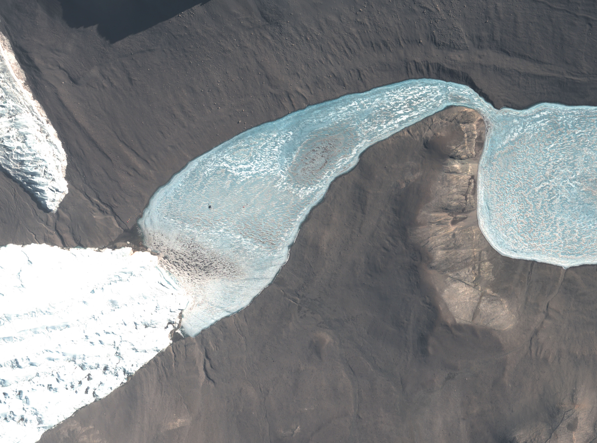
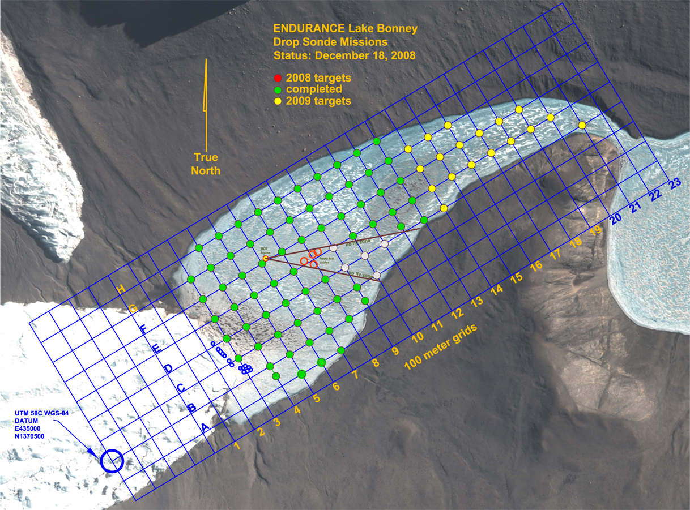
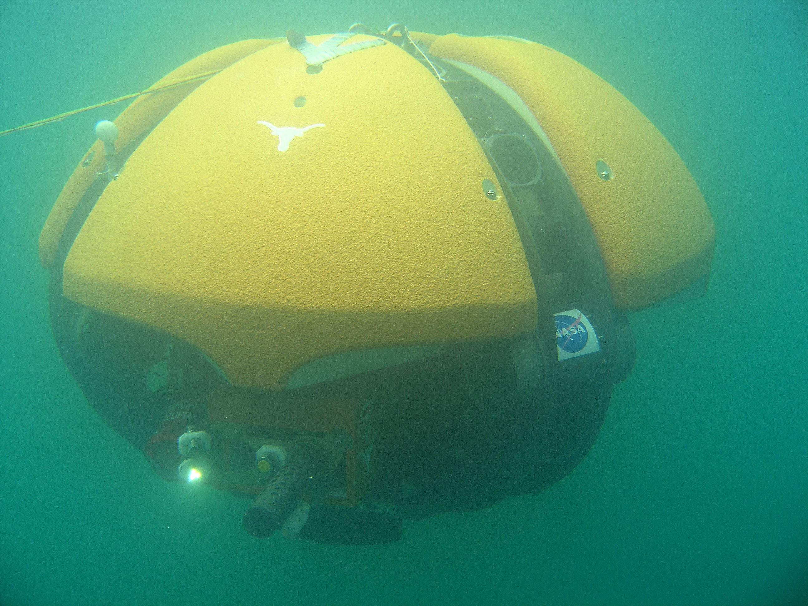
Given that sparse data you can form hypotheses
and plan for more thorough data collection
Goals:
generate accurate bathymetry for
the lake
investigate the chemical
composition of the entire volume of the lake
Mission in December 2008
Mission in November 2009
collecting current multispectral satellite
photography at beginning and end of deployment
collecting GPS readings at various locations on
site to correctly map the satellite photography to the terrain
collecting information on lake level each day
collecting data on new bathymetry directly on a 100m by 100m
2D grid
collecting
data
on
new
bathymetry
via constant sonar
collecting data on chemical content of the lake
on a 100m by 100m by every-few-centimeters 3D grid
- Conductivity
(S/m)
- Temperature
(C )
- CDOM
(ru)
- Chl-a
(ru)
- REDOX
(meV)
- PAR
(umol/m^2*s^1)
- pH
- Turbidity
(ru)
collecting
photographs
of
the
ice
from below on a 100m by 100m 2D grid
each day there is one mission where the vehicle
starts from the same site and goes off to several of the
measurement sites and collects data.
however
- the
water level in the lake changes from day to day and year to
year meaning 'depth' is relative
- there
is a layer of high salinity in the lake which disrupts the
sonar
- a
stream starts flowing in the middle of data collection
changing the chemical makeup of the lake
- instruments
don't always work properly
first
- make a
copy of the collected data each day as a backup
- look at
collected data - in particular the n files of csv numerical
data
- do
the numbers make sense? excel or some other simple graphing
tool is your friend
- check
min, max, general trends, odd outliers, dramatic changes in
value
- what if
some of the measurements are clearly wrong? if a device failed
when did it fail and how many measurements are affected?
instead of looking at missions independently you now need to
look at them in temporal order
ideally you do all of this in the field so you
know if you missed collecting any data so you run another mission
and collect it again.
next
- need to
assign common null values to make later processing easier
(might be tricky with different types of data)
- need to
correct depth issues (where is depth gauge on the vehicle,
what is current lake level - this affects the precise depth of
all the measurements
- need to
keep track of the changes being made to the data - a copy (and
backup) of the raw data should remain untouched. Revised
versions of the data should have metadata describing the
changes that were made.
- need to
explicitly state what is the degree of accuracy of each
instrument
now we can get to more interesting
visualization and analysis issues
CoreWall
http://www.corewall.org/
Cores brought
up from lakes, ice, ocean floor, the antarctic
These cores
may be several meters long or several kilometers long
Used to
determine the climate thousands to hundreds of millions of years
ago
Cores brought
up and sliced in half
- One
half kept untouched in refrigerated storage
- One
half is photographed and sampled and then put into
refrigerated storage
Data from
each core segment is recorded on a paper 'barrel sheet' summary
stored in binders
- printouts
of
the photographic scan of the core
- graphs
of measurements taken along the core
- information
on
samples
collected
from
specific
points of the core
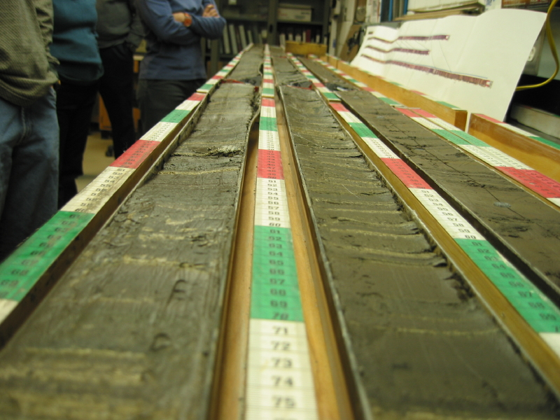
Why doesn't
this work
- Researchers
must go to the core to collect new tests
- Researchers
may
have
to
wait
months
before physical cores are shipped back from drill site
- Cores
in storage oxidize, shrink
- Paper
in binders is not an easily sharable format
- to look
at long cores investigators need to lay paper end to end down
the hallway
- cores
can be scanned at higher resolution than eventual data storage
- that information is wasted
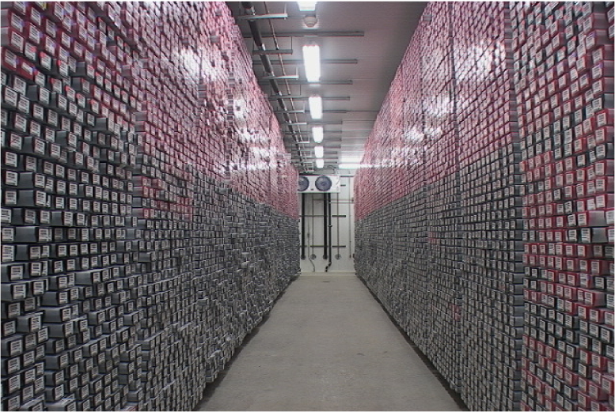
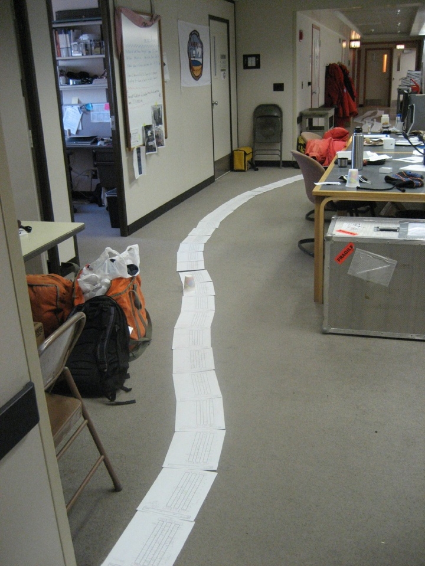
CoreWall
solution
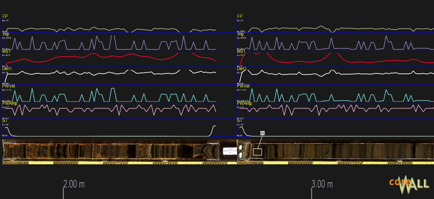
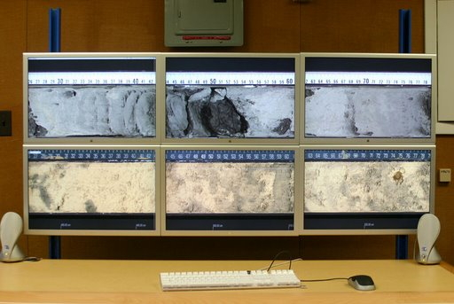
- keep
information in digital form (photography, numerical scans,
annotations)
- store
data in common database(s) allowing remote access over the
internet
- information
immediately
available
when
it
is
scanned at the drill site
- use
multiple high resolution monitors to allow people to load in
multiple core segments, pan, and zoom, in the lab
- easy to
find and compare related core data (from previous expeditions,
from nearby drill sites)
- same
software runs on a laptop for personal work
ANDRILL
2006 - two CoreWall setups in Antarctica
ANDRILL 2007 - seven CoreWall setups including one at the drill
site in Antarctica
now installed on JOIDES Resolution drill ship
http://www.apple.com/science/profiles/andrill/
moving towards 3D MRI / CT scans of cores
Coming Next Time
Project 3 Presentations
last
revision 10/16/10